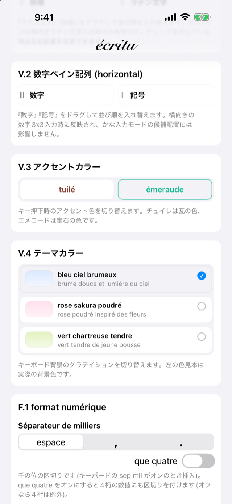
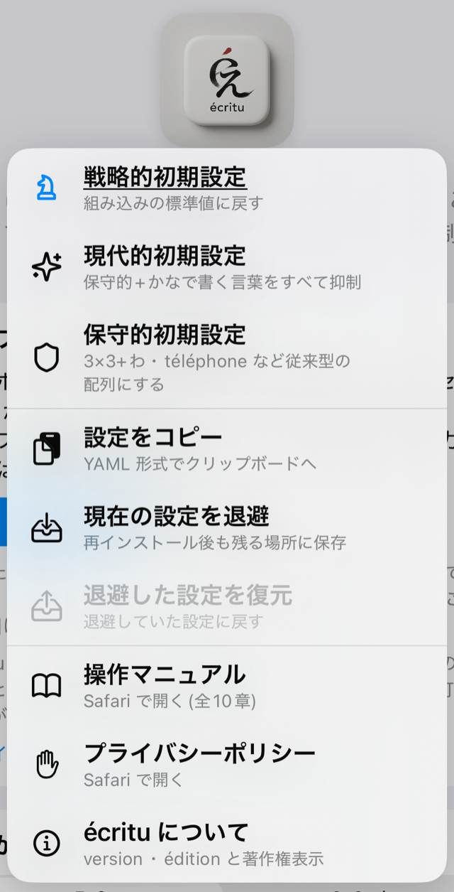
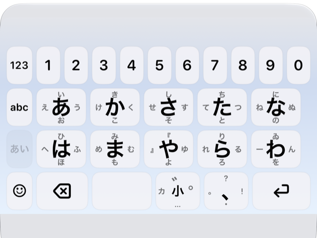
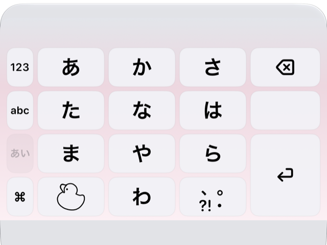
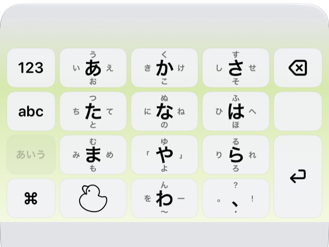

第3章初期設定を選ぶ
écritu には、設定をまとめて切り替える3つの『初期設定』があります。かな配列からテーマカラー、変換の癖まで、ひとそろいの組み合わせが1回の操作で当たります。使い始める前に、この章で自分に合うものを1つ選んでください。あとから個別に変えるのも、別の初期設定に切り替えるのも自由です。
設定は[écritu]アプリで行なう
écritu をインストールすると、ホーム画面に[écritu]というアプリが入ります。正式にはコンテナーアプリ(キーボード拡張を入れる容れ物のアプリ)と呼ばれるもので、écritu の設定はすべてこのアプリで行ないます。iOS の設定アプリ側にある écritu の項目は、第2章の[フルアクセスを許可]だけです。
アプリを開くと、上から順に、筆記体のタイトル[écritu]、四角いアイコン、小さなエディション番号、そして縦に長い設定の一覧が並びます。一覧の各項目は第8章 設定リファレンスで1つずつ説明します。

アイコンに触れるとメニューが出る
タイトルの下の四角いアイコンに触れると、触れた途端にアイコンの下にメニューが現れ、触れている間だけ表示されます。指をそのまま項目まで滑らせて離すと、その項目が実行されます。何も選ばずに離すと、メニューは消えるだけです。

メニューの上の3つが初期設定です。それぞれ目印のアイコンが付いています — [戦略的初期設定]はチェスのナイト、[現代的初期設定]はきらめき、[保守的初期設定]は盾。いま基準にしている初期設定には名前に下線が付き、アイコンが青く表示されます。その下には[設定をクリップボードにコピー][現在の設定を退避][退避した設定を復元](第8章)と、[操作マニュアル](このマニュアル)、[プライバシーポリシー]、[écritu について]が並びます。
初期設定を選ぶと確認ダイアログが出て、[適用]するとすべての設定がその組み合わせに置き換わります。それまでに個別に変えていた設定も上書きされるので、残したい設定があるときは先に[現在の設定を退避]しておいてください。追加語彙や学習語彙などの語彙はそのまま残ります。
3つの初期設定
3つはどれも『完全な組み合わせ』で、片方をもとに少しだけ変えたものではありません。ここでは、キーボードの見た目に表れる違いと、変換の癖の違いをまとめます。細かな項目まで含めた対応表は第8章の冒頭にあります。
戦略的初期設定 — écritu 独自の配列で速く打つ

組み込みの標準値そのもので、このマニュアルの各項目に[初期設定]として書いてある値の組み合わせです。écritu 独自の工夫を最も多く使う設定で、従来のフリック入力から見ると配列がかなり違います。
- かな配列は[5×2]。かなキーを横5個×縦2段に並べ、最上段に数字1〜0を常設します(第1章)。
- 前置修飾。小文字・濁点・半濁点のキーを、かなを打つ前に押します(第4章)。
- フリック方向は écritu式、ガイド文字はキーの4方向に表示。
- 英字は[AZERTY]、数字は[calculette]、テーマは bleu ciel brumeux(霞んだ空の青)。
- ☺︎ キーはタップで絵文字、上フリックで記号。基本記号の並びは ASCII 順。
- 変換は控えめな設定です。数詞は[アラビア数字だけ](2枚)、同音の漢字による書きかえは[本来の漢字だけ](蒸溜)、助数詞の『か』は か だけ(1か所)、連絡先の候補と欧文サジェスチョンはオフ。
現代的初期設定 — 慣れた配列で、いまの表記に寄せる

初めてインストールしたときに当たっている設定です(連絡先の候補だけは[使わない]のまま)。配列は iPhone のフリック入力に近い従来型で、変換はいまの文章でよく見る表記に寄せてあります。
- かな配列は[3×3+わ]。あかさ/たなは/まやら の3×3とわキー。数字段はありません。
- 後置修飾。かなを打った後に小文字・濁点・半濁点のキーを押す、おなじみの方式です。何も打っていないときにこのキーをタップすると顔文字パネルが開きます。
- フリック方向は littlebear式、ガイド文字は非表示(数字キーだけ下方向を表示)。
- 英字は[AZERTY]、数字は[clavier]、テーマは rose sakura poudré(粉をはたいたような桜色)。
- ☺︎ キーはタップで記号、上フリックで絵文字。基本記号の並びは ANSI 順。
- かなで書く言葉(所謂→いわゆる、下さい→ください、事→こと など)は[副詞]以外の5つの仲間をオンにして、漢字の候補を出しません(X.8)。
- 同音の漢字による書きかえは[両方(本来の漢字を先に)](蒸溜・蒸留)、数詞は[アラビア数字が先](2枚・二枚)、助数詞の『か』は か・箇・ヶ・カ を出します。
- 連絡先の候補は[一致した名前だけ候補にする](初回に許可を求められます)、欧文サジェスチョンは4言語ともオン、千位区切りはコンマ。
保守的初期設定 — 従来型の配列と表記

配列も表記も、従来のフリック入力にいちばん近い組み合わせです。かな配列・後置修飾・フリック方向・☺︎ キー・連絡先・欧文サジェスチョンは現代的初期設定と同じで、次の点が違います。
- かなキーのガイド文字を4方向に表示します(現代的は非表示)。
- 英字も[3×3](かなと同じフリック操作)、数字は[téléphone](電話機と同じ並び)。
- テーマは vert chartreuse tendre(若芽のような淡い黄緑)。
- やキーの左右フリックは「」(現代的・戦略的は『』)。
- かなで書く言葉は[形式名詞][指示語・代名詞]をオフにして、事・此処 のような漢字の候補も残します。
- 同音の漢字による書きかえは[両方(常用漢字を先に)](蒸留・蒸溜)、数詞は[漢数字が先](二枚・2枚)。
どれを選ぶか
多くの人は、[現代的初期設定]か[保守的初期設定]を選ぶとよいでしょう。どちらも配列は従来型なので、これまでのフリック入力の指の動きがそのまま使えます。表記をいまの文章に寄せたいなら現代的、漢字の候補を広く残したいなら保守的です。
[戦略的初期設定]は、5×2の数字段と前置修飾に慣れる時間を取れる人向けです。慣れるとモードの行き来がいちばん少なくなりますが、最初の数日は指が迷います。
どれを選んでも、個々の設定はあとから自由に変えられます(第8章)。選び直したくなったら、アイコンのメニューから別の初期設定を当て直してください。次章では、フリック入力から変換・確定までの基本操作を説明します。